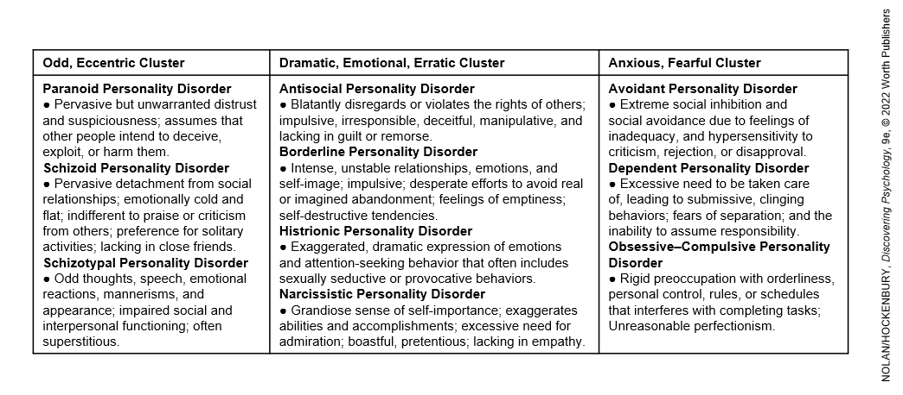

Slides
- Part 1: Defining and Classifying Psychological Disorders
- Part 2: Disorders with Prominent Anxiety Symptoms
- Part 3: Depressive and Bipolar Disorders
- Part 4: Eating Disorders and Personality Disorders
- Part 5: Schrizophrenia
Part 1: Defining and Classifying Psychological Disorders
Psychologially Abnormal Behavior
Our previous study of social cognition showed us that we continuously make judgments about people, their motives, and their behaviors. One example is when we judge whether behaviors are "normal" or "abnormal". These judgments are subject to biases and errors
An assumption that "normal" is very different than "abnormal/crazy" is an inaccurate oversimplification. For many behaviors, the different is a matter of degree.
The dividing ine between normal and abnormal behavior is often determined by social or cultural context. Prevailing social norms must be considered.
- there's a srong social stigma attached to suffering from a psychological disorder.
- people with psychological disorders are often stereotyped as helpless victims, or as unpredictable, dangerous, and violent
- the real correlation between mental illness and violent behavior is not zero, but it is small
- social stigma can make people reluctant to seek help
- a scientific approach can minimize bias and error
- Psychopathology is the study of the origins, symptoms, and development of psychological disorders
- research shows that psychological disorders are more common that some might think
- according to the findings of the National Comorbidity Study Replication (NCS-R), one out of two adults (46%) have experienced the symptoms of a psychological disorder at some point in their lifetime
Major Models of Abnormality and the Classification of Psychological Disorders
There are a few major models that attempt to account for abnormality and classify psychological disorders.
Psychological disorder: a pattern of behavioral and psychological symptoms that:
- causes significant personal distress
- impairs the ability to function in one or more important areas of life
- or both
- an important qualification is that the pattern of behavioral or psychological symptoms must represent a serious departure from the prevailing social and cultural norms
The Diagnostic and Statistical Manual of Mental Disorders (DSM)
In the United States, the Diagnostic Manual of Mental Disorders, Fifth Edition, Text Revision (DSM-5-TR) provides a common language labeling for psychological disorders and comprehensive guidelines for diagnosing them
- it is published by the American Psychiatric Association
- it describes more than 260 specific psychological disorders and additional conditions
- it describes specific symptoms, diagnostic guidelines, and the typical course for each disorder
- it's the most accepted diagnostic model
- has increased in number of disorders classified over the years with new editions
- the DSM-5-TR has been criticized for:
- including "typical" experiences as disorders
- arbitrary cutoffs
- gender bias for some disorders
- possible bias due to authors' financial ties to the pharmaceutical industry
The International Classification of Diseases
The International Classification of Diseases (ICD) plays a similar role internationally
- published by the World Health Organization
- diagnostic codes are used in the U.S. for health insurance reimbursement
The Research Domain Criteria
The Research Domain Criteria (RDoC) framework has been put forward by the National Institute of Mental Health, an alternative to the DSM-5-TR.
- compared to the DSM-5-TR, RDoC is more focused on biological factors
- the approach uses dimentions instead of categories
- some researchers seek a common "p factor" that underlies all the dimensions
- this factor incorporates a wide array of symptoms underlying all forms of mental illness
- it provides a measure of the overall severity of psychological disorders
- it relates to a cluster of risk factors, such as family history of mental illness and early neurological problems
Review Questions:
Which of the following is NOT a key factor in determining if a behavior is psychologically abnormal?
Frequency of behavior across society
What is psychopathology?
The scientific study of the origins, symptoms, and development of psychological disorders
Which of the following best describes the term “psychological disorder”?
A pattern of behavioral and psychological symptoms that cause significant personal distress or impair one’s ability to function
What role does the DSM-5-TR play in the classification of psychological disorders?
It offers comprehensive guidelines for diagnosing and labeling psychological disorders
What is a common criticism of the DSM-5-TR?
It includes some normal experiences as psychological disorders
What is one difference between the DSM-5-TR and the RDoC framework?
The RDoC framework focuses more on biological factors and uses dimensions rather than categories
According to the National Comorbidity Study Replication (NCSR), what percentage of adults experience symptoms of a psychological disorder at some point in their lives?
46%
Which organization publishes the DSM-5-TR?
American Psychiatric Association (APA)
Why is the dividing line between normal and abnormal behavior often difficult to determine?
The difference is a matter of degree and often depends on social and cultural context
Part 2: Disorders with Prominent Anxiety Symptoms
The symptoms and causes of anxiety disorders, ODC, and PTSD.
Anxiety: unpleasant emotional state characterized by physical arousal and feelings of tension, apprehension, and worry
- has physical and mental effects in putting the individual on alert
- when it alerts a person to a realistic threat, it's adaptive and normal
- Pathological Anxiety: is irrational, uncontrollable, disruptive
Anxiety disorders: category of psychological disorders in which extreme anxiety is the main diagnostic feature and causes significant disruptions in the person's cognitive, behavioral, or interpersonal functioning
- generalized anxiety disorder
- panic disorder
- phobias
- social anxiety disorder
Other disorders are not categorized by the DSM-5-TR as anxiety disorders, but symptoms of anxiety are prominent
- posttraumatic stress disorder
- obsessive-compulsive disorder
Generalized Anxiety Disorder (GAD)
anxiety disorder characterized by excessive, global, and persistent symptoms of anxiety
- when one source of worry is removed, another takes its place
- environmental, psychological, genetic, and other biological factors are probably involved
- problematic anxiety can be evident from a very early age
Panic Disorder
Panic attack: a sudden episode of extreme anxiety that rapidly accelerates in intensity
- the most common symptoms of a panic attack are pounding heart, rapid breathing, breathlessness, and a choking sensation
- accompanying the intense, escalating surge of physical arousal are feelings of terror and the belief that one is about to die, go crazy, or completely lose control
- a panic attack typically peaks within 10 minutes on onset and then gradually subsides
Panic disorder: an anxiety disorder in which a person experiences frequent and unexpected panic attacks; some panic disorder sufferers develop agoraphobia
- Agoraphobia: an axiety disorder involving extreme fear of suffering a panic attack or other embarrassing or incapacitating symptoms in a public situation where escape is impossible, and help is unavailable
- extreme fear leads to avoidance of public places
Explaining Panic Disorder
- Triple vulnerabilities model of panic (Barlow)
- biological predisposition toward anxiety
- low sense of control over potentially life-threatening events
- oversensitivity to physical sensations
- Catastrophic cognitions theory (Hinton & others)
- overly sensitive o physical sensations and als tend to catastrophize meaning of their existence
- this catastrophic interpretations adds to thier physiological arousal and intensifies the symptoms
- other cultures have reported syndromes resembling panic disorder
- ex: Ataque de nervios: also characterized by hysteria, has been reported in many Latin American cultures
Phobias
A persistent and irrational fear of a specific object, situation, or activity
Specific phobia: excessive, intense, and irrational fear of a specific object, situation, or activity that is actively avoided or endured with marked anxiety
- encountering feared situation can provoke a full-fledged panic attack
Generally, the objects or situations that produce specific phobias tend to fall into 4 categories:
- fear of particular situations
- fear of features of the natural environment
- fear of injury or blood
- fear of animals and insects
Explaining Phobias
Learning theories: some phobias can be explained in terms of classical conditioning, operant conditioning, and observational learning
- Classical conditioning: fear associated with an inherently unrelated factor due to the timing of its association with a related, innately fear-inducing factor (think Little Albert and the rat)
- Operant Conditioning: avoidance behaviors are negatively reinforced
- Observational learning: seeing others react with fear
Biological preparation: certain fears, such as of spiders or heights, have an evolutionary history
Social Anxiety Disorder
an anxiety disorder involving the extreme and irrational fear of being embarrassed, judged, or scrutinized by others in social situtions
- one of the most common psychological disorders
- more prevalent among women than men
- can vary by culture
- ex: some young Japanese men suffer from taijin kyofusho (fear that their own appearance or smell, facial expression, or body language will offend, insult, or embarass other people)
Posttraumatic Stress Disorder (PTSD)
A disorder triggered by extreme trauma that results in intrusive memories; avoidance of stimuli; negative changes in thoughts and emotions; and a persistent state of heightened physical arousal
- originally, PTSD was associated with military combat
- in a given year, more than 5 million U.S. adults experience PTSD
- Gender differences: more than 2X as many women as men experience PTSD after exposure to a trauma
4 core clusters of symptoms:
- recurrent, involuntary, and intrusive memories of the event
- avoidance of stimuli and situations associated with the event
- negative changes in thoughts, moods, and emotions
- a persistent state of heightened physical arousal
Many people are remarkably relilient in the face of trauma, and some even experience an outcome know as post-traumatic growth (a positive change after trauma)
factors that affect the likelihood of developing PTSD:
- bioogical predispositions
- personal or family history of psychological disorders
- the magnitude of the trauma
- experiencing multiple traumas
Obsessive-Compulsive Disorder (OCD)
A disorder characterized by intrusive, repetitive, and unwanted thoughts (obsessions) and repetitive behaviors or mental acts that an individual feels driven to perform (compulsions)
- Obsessions: repeated, intrusive, and uncontrollable irrational thoughts or mental images that cause extreme anxiety and distress
- Compulsions: repetitive behaviors or mental acts that are performed to prevent or reduce anxiety and distress or to prevent a dreaded event; compulsions may be:
- overt physical behaviors, such as repeatedly washing your hands
- covert mental behaviors, such as counting or reciting certain phrases to yourself
- obsessions and compulsions take a similar shape in different cultures around the world, but the content seems to mirror the specific culture's concerns and beliefs
Explaining Obsessive-Compulsive Disorder
- deficiency serotonin, norepinephrine implicated
- drugs that increase the availability of these neurotransmitters decrease symptoms
- excess of the neurotransmitter glutamate
- dysfunction in specific brain areas
- areas involved in the fight-or-flight response
- frontal lobes, which play a key role in our ability to think and plan ahead
- negative reinforcement can strengthen compulsive behaviors (avoidance of bad thing reinforces behavior)
Review Questions:
What distinguishes pathological anxiety from normal anxiety?
It is irrational, uncontrollable, and disruptive
Which of the following is a key characteristic of Generalized Anxiety Disorder (GAD)?
Excessive and persistent worry about a variety of topics
Which of the following is a common feature of panic disorder?
Sudden and unexpected panic attacks
Agoraphobia is most closely related to which other anxiety disorder?
Panic Disorder
What is a specific phobia?
An intense, irrational fear of a particular object, situation, or activity
Which of the following is an example of biological preparation in the development of phobias?
Fear of heights or spiders
Which model explains panic disorder as the result of biological vulnerability, a low sense of control, and oversensitivity to physical sensations?
Triple Vulnerabilities Model
What characterizes Social Anxiety Disorder?
Extreme fear of being embarrassed or judged in social situations
Which of the following is NOT a symptom cluster of PTSD?
Excessive handwashing or counting rituals
Obsessions in OCD are best described as:
Intrusive and uncontrollable thoughts that cause anxiety
Compulsions in OCD are:
Ritualistic behaviors or mental acts performed to reduce anxiety
Which neurotransmitter deficiency is linked to OCD symptoms?
Serotonin
Part 3: Depressive and Bipolar Disorders
The symptoms and causes of depressive disorders and bipolar disorders
Normal variations in moods and emmotions are part of life's "ups and downs." Distrubed moods and emotions violate the criteria of normal moods in quality, intensity, and duration.
- depressive disorders and bipolar disorders are given distinct DSM-5-TR categories
- both the depressive and bipolar disorders are sometimes called mood disorders or affective disorders
Depressive Disorders
Major Depressive Disorder
a mood disorder that is characterized by extreme and persistent feelings of despondency, worthlessness, and hopelessness
- causes impaired emotional, cognitive, behavioral, and physical functioning
- emotional: feelings of sadness, guilt, worthlessness, etc.
- cognitive: difficulty thinking, concentrating, remembering, etc.
- behavioral: crying, withdrawal from social activities, etc.
- physical: changes in appetite and weight, sleep difficulties, diminished sexual interest, etc.
- depression is often accompanied by the physical symptoms of anxiety
- thoughts become globally pessimistic and negative about the self, the world, and the future
- people suffering from major depressive disorder are more than 3X as likely to as other people to attampt suicide
- persistent depressive feelings may or may not be triggered by life events
- a person must display most symptoms described in the DSM-5-TR for two weeks or longer
- the prevalence of Major Depressive Disorder:
- often called "the common cold" of psychological disorders, major depression is among the most prevalent of all psychological disorders
- women are twice as likely as men to be diagnosed with major depression, perhaps because of more chronic stress and less sense of personal control
- the course of Major Depressive Disorder:
- many people try to cope with the symptoms without professional help
- left untreated, symptoms of major depression can easily last six months or longer
- untreated depression may recur and become progressively more severe
Seasonal Affective Disorder (SAD)
Episodes of depression typically occur during autumn and winter, when there is less sunlight and subsude during the spring and summer
- the research evidence for the existence of SAD is contradictory
Persistent Depressive Disorder
Chronic, low-grade feelings of depression that produce subjective discomfort, but do not seriously impair the ability to function
- may develop after a stressful event or trauma
Bipolar Disorders
A mood disorder involving periods of incapacitating depression alternating with periods of extreme euphoria and excitement; formerly called manic depression
Manic Episode: a sudden, rapidly escalating emotional state characterized by extreme euphoria, excitement, physical energy, and rapid thoughts and speech
- during a manic episode, people sleep very little and display boundless energy; wildly inflated self-esteem; grandiose ideas, all of which may represent delusional beliefs; and flight of ideas (thoughts rapidly and loosely shift from topic to topic)
- usually, a manic episode immediately precedes or follows a bout of major depression
- a small percentage of people experience only manic episodes
- because the ability to function during a manic episode is severely impaired, hospitalization is usually required
Cyclothymic Disorder
A milder, chronic form of bipolar disorder
- people experience moderate, but frequent mood swings for two years or longer
- mood swings are not severe enough to qualify as either bipolar disorder or major depression
The Prevalence of Bipolar Disorder
- bipolar disorder is less common than major depression
- the lifetime risk is approximately 1%
- no gender differences in prevalence
The Course of Bipolar Disorder
- the onset typically occurs in the person's early 20s
- manic and depressive episodes last from a few days to a couple of months
- episodes typically recur (sometimes due to discountinuing medications, such as lithium)
Explaining Depressive Disorders and Bipolar Disorders
factors associated with depressive and bipolar disorders
- genetic predisposition
- differences in the activation of brain structures
- disruptions in brain chemistry
- Major Depression: serotonin and norepinephrine
- Bipolar Disorder: glutamate
- stress
Review Questions:
Which of the following is a key feature of major depressive disorder?
Extreme and persistent feelings of despondency, worthlessness, and hopelessness
In major depressive disorder, how long must symptoms persist for a diagnosis?
Two weeks
Which of the following is a characteristic of a manic episode in bipolar disorder?
Excessive euphoria, excitement, and boundless energy
Which of the following is NOT typically a symptom of major depressive disorder?
Excessive energy and rapid thoughts
What is a defining feature of Seasonal Affective Disorder (SAD)?
Episodes of depression that occur during autumn and winter and subside in spring and summer
Which neurotransmitter is most closely associated with major depressive disorder?
Serotonin
Cyclothymic disorder is a milder form of which mood disorder?
Bipolar disorder
What is a primary difference between major depressive disorder and bipolar disorder?
Major depressive disorder includes periods of extreme sadness, while bipolar disorder typically involves alternating periods of depression and mania
What is the lifetime risk for developing bipolar disorder?
1%
Which brain chemical is implicated in bipolar disorder, particularly in relation to manic episodes?
Glutamate
Part 4: Eating Disorders and Personality Disorders
The symptoms and causes of eating disorders and personality disorders
Eating Disorders
A Category of psychological disorders characterized by severe distrubances in eating behavior
- age of onset is usually adolescence or early adulthood
- 90 to 95% of the people who experience an eating disorder are female
Anorexia Nervosa
An eating disorder characterized by excessive weight loss, an irrational fear of gaining weight, and distorted body self-perception
- key features:
- refuses to maintain a minimally normal body weight
- intense fear of gaining weight or becoming "fat"
- distorted perception about the size of body
- denies the seriousness of weight loss
- effects are similar to those caused by starvation
- hormonal levels decrease, incuding reproductive hormones
Bulimia Nervosa
An eating disorder characterized by binges of extreme overeating followed by self-induced vomiting, misuse of laxitives, or other inappropriate methods to purge the excessive food and prevent weight gain
- key features:
- fear of gaining weight
- stay within a normal weight range
- recoginize that they have an eating disorder
- binges typically occur twice a week
- effects:
- repeated purging disrupts the body's electrolyte balance, which is potentially fatal
- slef-induced vomiting erodes tooth enamel
- can damage gastrointestinal tract
Binge Eating Disorder
- engages in bingeing behaviors (DSM-5, 2013)
- does not engage in purging or other behaviors that rid their bodies of the excess food
- experience the same feelings of distress, lack of control, and shame that people with bulimia experience
Explaining Eating Disorders
- decreases brain activity of the neurotransmitter serotonin
- family interaction patterns
- critical comments by parents and/or siblings
- parental modeling of disordered eating
- psychological characteristics, such as:
- negative beliefs about oneself
- perfectionism and rigid thinking in childhood have been associated with anorexia
- Western cutural attitudes toward thinness
Personality Disorders
Inflexible, maladaptive pattern of thoughts, emotions, behaviors, and interpersonal functioning that deviate from the expectations of the individual's culture.
- there are maladaptive patterns of perceiving, relating to, and thinking about the self, other people, and the environment
- the patterns are stable over time and across situations
- they interfere with long-term functioning
- ten distinct personality disorders are categorized into 3 basic clusters:
- odd, eccentric
- dramatic, emotional, erratic
- anxious, fearful

Boderline Personality Disorder (BPD)
A personality disorder characterized by instability of interpersonal relationships, self-image, and emotions, and marked impulsivity
- most serious and disabling of the personality disorders
- moods and emotions are intense, fluctuating, and extreme, often vastly out of proportion to circumstances
- includes inappropriate, intense, and often uncontrollable episodes of anger
- relationships with others are chaotic
- often characterized by a desperate fear of abandonement
- "cutting" or other acts of self-mutilation, threats of suicide, and suicide attemps are common
Explaining Boderline Personality Disorder (BPD)
- Biosocial Developmental Theory: BPD is the outcome of a unique combination of biological, psychological, and environmental factors
- biological temperament: extreme emotional sensitivity, impulsivity, and negative emotions
- caregivers do not teach the control of impulses of regulation of emotions
- parents or caregivers may shape and reinforce patterns of frequent, intense, emotional displays
- history of abuse and neglect may be present, but is not a necessary ingredient
Review Questions:
Which of the following is a characteristic of anorexia nervosa?
Excessive weight loss and intense fear of gaining weight
What is a key difference between bulimia nervosa and binge-eating disorder?
People with bulimia nervosa engage in purging after bingeing, while people with binge-eating disorder do not
Which neurotransmitter is most closely associated with eating disorders?
Serotonin
Which of the following is NOT a characteristic of borderline personality disorder (BPD)?
Persistent avoidance of social interactions
What are some common effects of bulimia nervosa on the body?
Erosion of tooth enamel and electrolyte imbalances
Which personality disorder is characterized by a fear of abandonment and unstable relationships?
Borderline personality disorder
In the biosocial developmental theory of borderline personality disorder, what is a contributing biological factor?
Biological temperament with excessive emotional sensitivity
Which factor is a potential explanation for the development of eating disorders?
Low self-esteem and perfectionism in childhood
What is a characteristic of personality disorders?
Maladaptive patterns of thoughts, emotions, and behaviors that deviate from cultural expectations
Part 5: Schrizophrenia
The symptoms and causes of Schrizophrenia
Schrizophrenia: a psychological disorder in which the ability to function is impaired by severely distorted beliefs, perceptions, and thought processes
- symptoms are divided into two broad categories:
- postive symptoms
- negative symptoms
Positive Symptoms:
symptoms that reflect excesses or distortions of normal functioning
- Delusions: false beliefs
- presist in spite of compelling contradictory evidence
- themes include:
- Reference: other people's actions and ordinary events personally relate to them
- Grandeur: possessing extreme power, importance, wealth, etc.
- Persecution: others are plotting to harm them or a loved one
- Being controlled: outside forces are trying to control them
- Hallucinations: false or distorted perceptions
- voices or visual stimuli are most common
- severely disorganized thought processes, speech, and behavior
Negative Symptoms
consists of marked deficits or decreases in behavioral or emotional functioning
- deminished emotional expression or flat affect—dramatic reduction in emotional responsiveness and facial expressions; speech is slow and monotonous
- inability to initiate or persist in even simple fors of goal-directed behaviors, such as personal hygiene and social activities
Schrizophrenia is diagnosed when two or more characteristic symptoms are actively present for a month, or longer
- at least one symptom must be delusions, hallucinations, or disorganized speech
symptoms od schizophrenia often vary across cultures
- cultural differences in hallucinations and delusions
the content of delusions chnages with time as culture shifts
- recently, delusions are more likely to involve technology and media
The Prevalence and Course of Schizophrenia
Prevalence
- approximately 1 million Americans are treated annually
- global prevalence rates appear to be less than 1%
Course
onset of schizophrenia typically occurs during young adulthood
- 1/4 of those who experience an episode of schizophrenia recover completely
- 1.4 experience recurrent episodes of schizophrenia, but with minimal impairment in ability to fucntion
- for 1/2, schizophrenia becomes a chronic, and the ability to function may be severely impaired
Explaining Schizophrenia
Genetic Factors
family, twin, and adoption studies
- schizophrenia cluster in certain families
- the more closely related a person is to someone who has schizophrenia, the greater the risk of schizophrenia
- if either biological parent of an adopted individual had schizophrenia, there is a greater risk of developing shizophrenia
- no specific pattern of genetic variation can be identified as the genetic "cause" of schizophrenia, but presence of certain genetic variations increases susceptibility
Immune System
Viral Infection Theory
- women exposed to flue virus during the first trimester has a seven-fold increased risk of a child who developed schizophrenia
- people with schizophrenia were more likely to have had mothers who were treated for an infection while pregnant than those in the control group. They were also more likely than those in the control group who have been born in the winter, when upper respiratory infections are most common
Atypical Brain Structures
- evidence:
- approximately 50% of people with schizophrenia show atypical brain structure or atypical brain functioning
- most consistent finding: enlargement of the ventricles
- also, evidence of loss of gray matter tissue and lower overall volume of the brain
- people with schizophrenia and those at high risk have weaker brain conenctions between two key areas
- Memory & Learning: located in the temporal lobes
- Sensory Processing: Areas responsible for hearing, language, and vision
- not conclusive:
- some people with schizophrenia do not show these brain differences
- evidence is correlational
Atypical Brain Chemistry
- imbalances in neurotransmitters
- excessive activity of dopamine in the brain
- antipsychotic dugs reduce/block dopamine activity in the brain
- drugs that boost dopamine can trigger or worsen schizophrenia-like symptoms in both patients and healthy individuals
- imbalances in glutamate and adenosine are related to schizophrenia
- however, connection between neurotransmitters adn schizophrenia symptoms remain unclear
Psychological Factors: Unhealthy Families
A Finnish study found adopted children with a biological mother with schizoprenia had a higher rate of schizophrenia when raised in a disturbed, adoptive home
- there is a strong influence of the adoptive family environment on the development of serious mental disorders
- a healthy psychological environment may mounteract a genetic vulnerability to schizophrenia
- an unhealthy family environment can act as a catalyst for the onset of schizophrenia
Review Questions:
Which of the following is a positive symptom of schizophrenia?
Hallucinations
What is a delusion of persecution?
Believing that others are plotting to harm you or your loved ones
Which of the following is an example of a negative symptom of schizophrenia?
Diminished emotional expression
For a diagnosis of schizophrenia, how long must two or more characteristic symptoms be present?
One month
What are the most common types of hallucinations in schizophrenia?
Auditory and visual
What is the term for a severe reduction in emotional responsiveness, often seen in schizophrenia?
Flat affect
Which neurotransmitter is most closely associated with excessive activity in schizophrenia?
Dopamine
Which brain difference is most consistently found in people with schizophrenia?
Enlargement of the ventricles
What does the viral infection theory suggest about the cause of schizophrenia?
It may be linked to exposure to viral infections during prenatal development
What percentage of people with schizophrenia exhibit atypical brain structure or atypical brain functioning?
50%